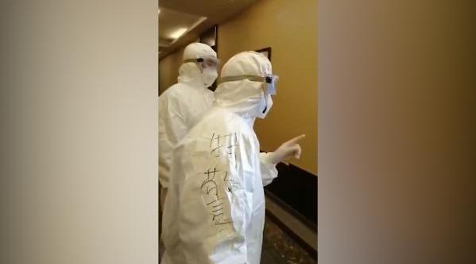

这个人以后再出去后，会无底线的有机会就黑🇨🇳是如何虐待她的@澎湃新闻:【#女子被隔离坚持要喝矿泉水#，民警：不是酒店】近日，一段发生在上海浦东某隔离点（某星级酒店）的视频曝光，一位海外回来被隔离的女子坚持要喝矿泉水，否则就活不下去。民警严肃指出：隔离区不是酒店，这边不是来旅游的！据悉，该隔离点物资保障充足，能满足被隔离人员基本生活需求。（视频来源：网络综合）被隔离女子非矿泉水不喝，民警：不是酒店 澎湃新闻的微博视频 356万次播放 01:48
年初说的大幅波动是什么意思呢。就是年底看，不是大阳线，也不是大阴线，而是长上影长下影的，实体很小的线。也就是说，虽然全年有过大涨，有过大跌，最终收盘点位与年初不会差太多。这刚过了两个半月，还有十个月，看看吧。
看新闻，看这个那个分析宏观经济天下大势倒是没错，但你首先得有自己的独立判断力再看那些。否则，你就是随波逐流的旅鼠。怎么办，很简单。闭上眼睛想自己的金融资产跌30%会不会崩溃。会，就减仓到不崩溃的仓位。不会，踏踏实实持有。别管那么多利好利空。如果现在觉得跌30%不会不舒服，但是到时候真跌还是不舒服，那也别减了。别割了，都焦了。那时候就是闭上眼睛关上账户，不看，它就没发生。